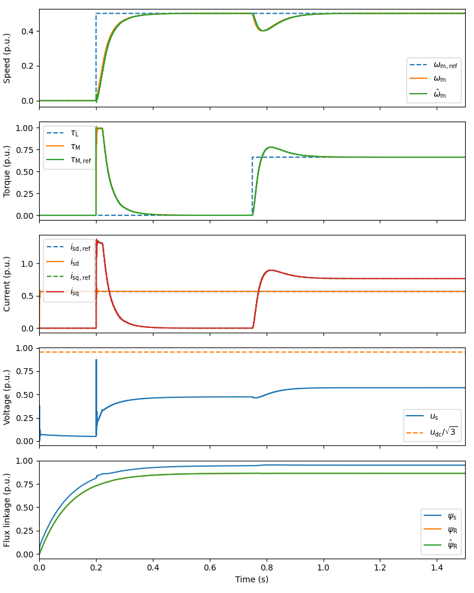

Note
Click here to download the full example code
Example simulation script: vector-controlled 2.2-kW induction motor drive.
Sensorless vector control is used in the default parameters.
Out:
Execution time: 2.56 s
from time import time
import numpy as np
import motulator as mt
# Start computing the execution time
start_time = time()
# Compute base values based on the nominal values (just for figures)
base = mt.BaseValues(U_nom=400, # Line-line rms voltage
I_nom=5, # Rms current
f_nom=50, # Frequency
tau_nom=14.6, # Torque
P_nom=2.2e3, # Power
p=2) # Number of pole pairs
# Gamma-equivalent motor model
motor = mt.InductionMotor(R_s=3.7, R_r=2.5, L_ell=.023, L_s=.245, p=2)
mech = mt.Mechanics(J=.015) # Mechanics model
conv = mt.Inverter(u_dc0=540) # Inverter model
# conv = mt.PWMInverter(u_dc0=540) # Inverter with PWM modeled
mdl = mt.InductionMotorDrive(motor, mech, conv) # System model
# Control system
ctrl = mt.InductionMotorVectorCtrl(mt.InductionMotorVectorCtrlPars(
sensorless=True, # Enable sensorless mode
T_s=250e-6, # Sampling period
delay=1, # Amount of computational delay
alpha_c=2*np.pi*200, # Current-control bandwidth
alpha_o=2*np.pi*40, # Observer bandwidth
alpha_s=2*np.pi*4, # Speed-control bandwidth
psi_R_nom=.9, # Nominal rotor flux
i_s_max=1.5*base.i, # Current limit
tau_M_max=1.5*base.tau_nom, # Torque limit (for the speed ctrl)
J=.015, # Inertia estimate (for the speed ctrl)
p=2, # Number of pole pairs
# Inverse-Gamma model parameter estimates
R_s=3.7, R_R=2.1, L_sgm=.021, L_M=.224))
# Set the speed reference and the external load torque
ctrl.w_m_ref = lambda t: (t > .2)*(.5*base.w)
mdl.mech.tau_L_ext = lambda t: (t > .75)*base.tau_nom
# No load, field-weakening (uncomment to try)
# mdl.mech.tau_L_ext = lambda t: 0
# ctrl.w_m_ref = lambda t: (t > .2)*(2*base.w)
# Create the simulation object and simulate it
sim = mt.Simulation(mdl, ctrl, base=base, t_stop=1.5)
sim.simulate()
# Print the execution time
print('\nExecution time: {:.2f} s'.format((time() - start_time)))
# Plot results
mt.plot_pu(sim)
# mt.plot(sim)
Total running time of the script: ( 0 minutes 3.113 seconds)